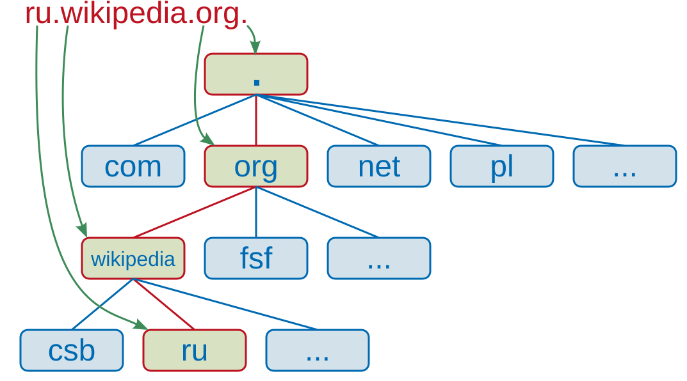
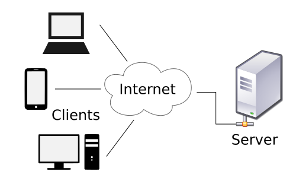

How the Internet Works
In the Code.org “IP Addresses & DNS” video, Paola Mejia compares DNS to something you’d find in everyday life. What does she compare it to?
In the Code.org “IP Addresses & DNS” video, Vint Cerf explains why IPv6 was created. How many unique addresses does IPv6 support?
In the PowerCert DNS video, what is the first type of DNS server your computer contacts when resolving a domain name?
In the PowerCert DNS video, how many root server clusters exist worldwide?
In the Code.org “Packets, Routing & Reliability” video, what does TCP do when a packet is lost or arrives corrupted?
In the Code.org “Packets, Routing & Reliability” video, the speaker explains that data packets can take different routes to reach the same destination. What determines which route a packet takes?
Every device connected to the Internet gets an IP address — a unique number that identifies it on the network, much like a street address identifies a house. Without IP addresses, routers would have no way of knowing where to send your data.
The original system, IPv4, uses four numbers separated by
dots (e.g. 192.168.1.1). Each number ranges from 0 to 255, giving roughly 4.3 billion
possible addresses. That sounded like plenty in the 1980s — but with billions of smartphones, laptops,
smart TVs, and IoT devices online today, IPv4
addresses have essentially run out.
The replacement is IPv6, which uses eight groups of
hexadecimal digits separated by colons (e.g. 2001:0db8:85a3::8a2e:0370:7334). IPv6 provides
roughly 340 undecillion addresses — enough for every grain of sand on Earth to have its own IP, many times over.

Humans remember names; computers work with numbers. The Domain Name System (DNS)
bridges that gap. When you type wikipedia.org into your browser, DNS translates that
domain name into the server’s IP address
so your computer knows where to connect.
The lookup happens in stages. First your device asks a DNS resolver
(usually run by your ISP or a public service like Google Public DNS).
If the resolver doesn’t already know the answer, it queries a chain of servers:
a root server (13 clusters worldwide),
then a TLD server (handling .com, .org, etc.),
and finally the authoritative name server
that holds the actual IP for that domain.
To speed things up, every step in this chain uses caching — storing recent results so the full lookup doesn’t need to repeat for every single request.

When you type a URL like
https://en.wikipedia.org/wiki/Internet and press Enter, a chain of events fires off in milliseconds:
en.wikipedia.org) and asks DNS for its IP address.208.80.154.224)./wiki/Internet.”This entire round trip — DNS lookup, connection, request, response, rendering — usually takes well under one second.
Data doesn’t teleport from your device to a server. It hops through a series of routers — sometimes dozens — each one deciding the next best step toward the destination. Every hop is a separate network node that reads the destination IP and forwards the packet onward.
Traceroute is a tool that reveals this hidden journey. It sends special packets with increasing TTL (Time to Live) values. Each router along the way decrements the TTL by one; when it hits zero, that router reports back. The result is a numbered list of every hop your data takes, along with the time each hop took — letting you see exactly which networks and cities your request passes through.
You can try it yourself: on Windows, open a terminal and type tracert google.com;
on Mac or Linux, use traceroute google.com.
What is the main purpose of an IP address?
Why was IPv6 created?
What does DNS do?
What is the correct order when your browser loads a web page?
What does the traceroute tool show you?
Create an HTML/JS page with an input field where the user types a domain name
(e.g. wikipedia.org). When they click a button, the page displays a
step-by-step text animation showing the DNS resolution process:
Each step should appear one at a time with a short delay (like a real lookup). Use CSS to style each step as a colored card or row. Display a random (fake) IP address at the end for any domain the user enters.
<input> field and a “Lookup” buttonsetTimeoutPaste your HTML into the HTML panel, CSS into the CSS panel, and JS into the JavaScript panel. Click “Run” to see the result!